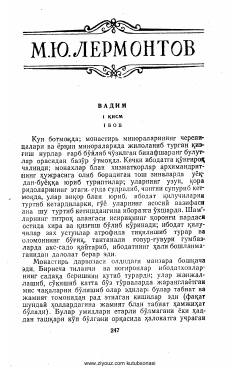

VJamiyatdan chetlatilgan insonlar va Vadim ismli sirli qahramonning murakkab taqdiri haqidagi asar.
Mixail Lermontovning ushbu asari monastir atrofidagi tilanchilar va nogironlar hayoti, shuningdek, Vadim ismli sirli qahramonning taqdiri haqida hikoya qiladi. Asar inson ruhiyati, ijtimoiy tengsizlik va jamiyatdan chetlatilganlarning ichki dunyosini chuqur tasvirlaydi.